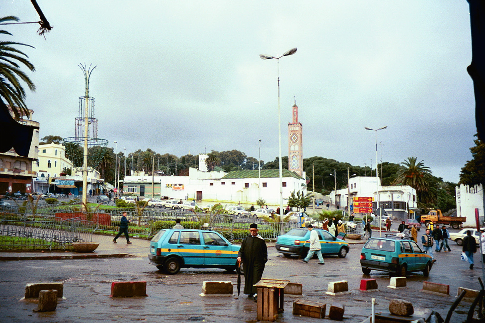

Tangier is a great city to visit if you have limited time in Morocco. With one day in Tangier, you have just enough time to see the highlights of the city, explore the medina, go shopping in the souks, and sample some Moroccan food.
One Day in Tangier Overview
- Petit Socco
- Grand Socco
- Medina
- Kasbah Museum
- Kasbah
- Lunch
- American Legation Museum
- Shopping in the souks
- Dinner
One Day in Tangier Itinerary
Petit Socco

Start your day in the Petit Socco, a small plaza located in the medina. This is a great spot to people watch while sipping on mint tea or coffee.
Grand Socco
Next, walk to the Grand Socco, a large plaza that connects the new city with the medina. On Wednesdays and Thursdays, this plaza turns into a large market.
Explore the Medina
The medina is the old town of Tangier. Spend some time getting lost in the maze of alleyways. This is the most atmospheric part of Tangier.
Kasbah Museum

Visit the Kasbah Museum, also called the Museum of Mediterranean Cultures. This small museum is housed in the former Sultan's Palace and contains artifacts from Morocco's history.
Explore the Kasbah
The Kasbah is the oldest part of Tangier. Walk along the fortress walls for panoramic views over the Strait of Gibraltar.
Lunch
Have lunch at one of the restaurants in the medina. We recommend Restaurant Hamadi or Restaurant el Morocco Club.
American Legation Museum
This museum is housed in the first American public property outside of the United States. It's small but interesting, with displays about the relationship between Morocco and the United States.
Shopping in the Souks
Spend the rest of the afternoon shopping in the souks. You can find leather goods, spices, ceramics, rugs, and more. Don't forget to bargain!
Dinner
End your day with dinner at Le Saveur du Poisson, a seafood restaurant that serves a set menu based on the day's catch.
How to Get to Tangier
Tangier is well connected to Spain by ferry. Ferries run frequently from Tarifa and Algeciras. The ferry from Tarifa takes just one hour.
Tangier also has an international airport with flights to many European cities.
Getting Around Tangier
Tangier is very walkable. All of the sites listed in this itinerary can be visited on foot. Petit taxis are available for longer distances.
Where to Stay in Tangier
Luxury: El Minzah Hotel - A historic 5-star hotel located near the medina
Midrange: Hotel Continental - A charming hotel with great views over the port
Budget: Hotel Mamora - A basic budget hotel near the Grand Socco
About Our Visit
We visited Tangier in January 2020. At that time, 1 USD = 9.7 Moroccan Dirham.